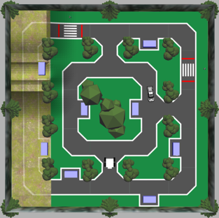

Machine Learning Autonomous Robot Competition
UBC, Vancouver | January 2023 – April 2023
Background
The project involved developing control software for a ROS robot in a Gazebo simulation. The robot was tasked with
navigating a track, identifying license plates on parked cars, and avoiding obstacles like pedestrians and trucks.
Points were awarded for completing tasks while penalties were applied for collisions or leaving the track. The goal
was to achieve the highest score in the shortest time.
Software Architecture
The solution involved two Python scripts: one for license plate recognition and another for driving and control.
License Plate Recognition
- Used HSV filtering, morphological transformations, and contour detection for plate isolation.
- Trained neural networks to recognize characters on license plates with high accuracy.
- Developed a priority-based queuing system to optimize data collection and character recognition.
Driving Algorithm
- Implemented imitation learning with RGB image input for navigation.
- Used three neural networks tailored for different track sections to optimize performance.
- Applied post-training quantization to reduce latency and enable high-speed driving.
Data Collection and Training
- Collected over 10,000 images for training, with a curated dataset of 4,145 letter images and 2,614 number images.
- Developed tools to automate data labeling and preprocessing.
- Trained networks with a learning rate of 1e-4 and batch size of 32, achieving robust model performance.
Obstacle Detection
Crosswalk and Pedestrian Detection
- Used HSV filtering to identify crosswalks and detect pedestrian movement.
- Implemented logic to decide whether the robot should stop or proceed based on pedestrian position and movement.
Truck Detection
- Applied HSV filtering to track the truck's location and stop the robot when necessary to avoid collisions.
Performance
The robot consistently performed at high speeds, completing the course in 23 seconds with a full score, earning
2nd place among 32 teams. The use of advanced algorithms and optimizations ensured reliability and precision in
navigating the track and completing tasks.
Areas for Improvement
- Optimize the driving control equations to reduce oscillations during turns.
- Consolidate the three driving neural networks into a single model to simplify the system.
- Explore more advanced post-training quantization techniques for further performance gains.